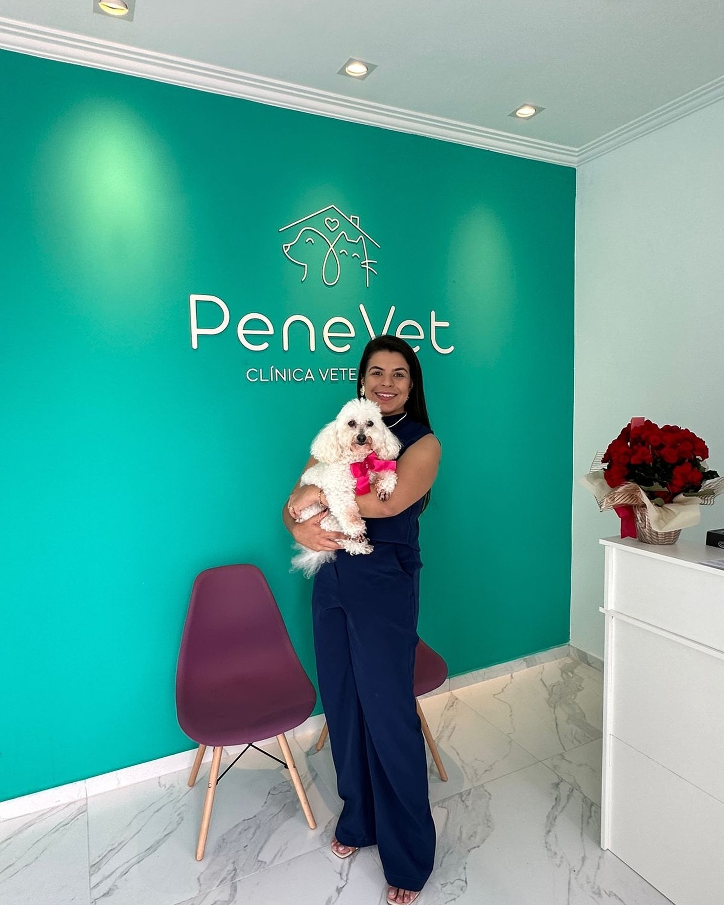

Atendimento acolhedor
A gente escuta você, observa seu pet com calma e explica tudo de forma simples sem pressa e sem mistério.
Saiba maisClínica veterinária em Penedo, RJ
Da consulta ao acompanhamento, estamos ao lado de você e do seu animal em cada etapa da vida.

SOBRE A PENEVET
Na PeneVet, acreditamos que cada vida importa. Saúde se constrói com prevenção, orientação e cuidado dentro e fora da clínica.
Veterinário, tutor e paciente caminham juntos por uma vida mais saudável e feliz.
Conheça nosso InstagramCUIDADO COMPLETO
Prevenção, diagnóstico e acompanhamento contínuo para o seu pet viver mais e melhor com você tranquilo em cada etapa.
A gente escuta você, observa seu pet com calma e explica tudo de forma simples sem pressa e sem mistério.
Saiba maisProtocolos rigorosos, preparo e acompanhamento no pós — porque o cuidado não termina na sala de cirurgia.
Entender o processoExames laboratoriais e diagnóstico por imagem para identificar a causa e tratar com precisão, evitando achismos.
Ver exames
Retornos e monitoramento em especialidades para ajustar o tratamento e garantir recuperação mais tranquila.
Como funciona
Rotina de vacinas, vermífugo e antipulgas com orientação personalizada para cada fase do seu animal.
Ver calendárioVocê agenda, tira dúvidas e recebe orientações com praticidade pelo WhatsApp, inclusive para animais silvestres.
Falar agoraNão sabe qual atendimento procurar? Conte o que está acontecendo pelo WhatsApp para saber como a clínica pode ajudar.
Falar com a PeneVetNOSSO ESPAÇO & ROTINA
Arraste para explorar nossa estrutura em Penedo, nossos consultórios e o carinho com cada paciente.
AVALIAÇÕES NO GOOGLE
“Excelente atendimento! Drª Jéssica é super atenciosa e dedicada. Devo a vida da minha cachorrinha a ela. Recomendo.”
Ótimo preço “Dr. Jéssica excelente profissional, com preços acessível e confiável, humana e ama o que faz”
“Levei minha cachorrinha para atualizar as vacinas e fui muito bem atendida, profissionais muito capacitados, clínica linda e atendimento ótimo! Eu adorei, estão de parabéns!!”
Sua avaliação é muito importante para nós e ajuda outros tutores de Penedo e região a encontrarem cuidado de confiança.
ONDE ESTAMOS
Av. Brasil, 145 – Penedo, Itatiaia – RJ (CEP 27589-435). Fácil acesso e acolhimento dedicado.
Para confirmar disponibilidade de horários e atendimentos específicos, fale com a clínica antes da visita.